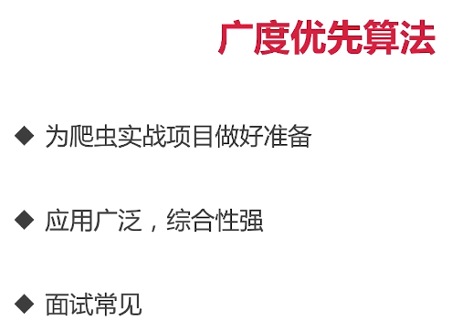
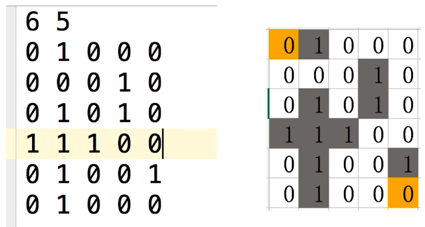

7-1 迷宫_算法


7-2 迷宫代码实现
6 5
0 1 0 0 0
0 0 0 1 0
0 1 0 1 0
1 1 1 0 0
0 1 0 0 1
0 1 0 0 0
package main
import (
"fmt"
"os"
)
func readMaze(filename string) [][]int {
file, err := os.Open(filename)
if err != nil {
panic(err)
}
var row, col int
fmt.Fscanf(file, "%d %d", &row, &col)
maze := make([][]int, row)
for i := range maze {
maze[i] = make([]int, col)
for j := range maze[i] {
fmt.Fscanf(file, "%d", &maze[i][j])
}
}
return maze
}
type point struct {
i, j int
}
var dirs = [4]point{
{-1, 0}, {0, -1}, {1, 0}, {0, 1}}
func (p point) add(r point) point {
return point{p.i + r.i, p.j + r.j}
}
func (p point) at(grid [][]int) (int, bool) {
if p.i < 0 || p.i >= len(grid) {
return 0, false
}
if p.j < 0 || p.j >= len(grid[p.i]) {
return 0, false
}
return grid[p.i][p.j], true
}
func walk(maze [][]int,
start, end point) [][]int {
steps := make([][]int, len(maze))
for i := range steps {
steps[i] = make([]int, len(maze[i]))
}
Q := []point{start}
for len(Q) > 0 {
cur := Q[0]
Q = Q[1:]
if cur == end {
break
}
for _, dir := range dirs {
next := cur.add(dir)
val, ok := next.at(maze)
if !ok || val == 1 {
continue
}
val, ok = next.at(steps)
if !ok || val != 0 {
continue
}
if next == start {
continue
}
curSteps, _ := cur.at(steps)
steps[next.i][next.j] =
curSteps + 1
Q = append(Q, next)
}
}
return steps
}
func main() {
maze := readMaze("lang/maze/maze.in")
steps := walk(maze, point{0, 0},
point{len(maze) - 1, len(maze[0]) - 1})
for _, row := range steps {
for _, val := range row {
fmt.Printf("%3d", val)
}
fmt.Println()
}
}
{kind=link}
{kind=link}